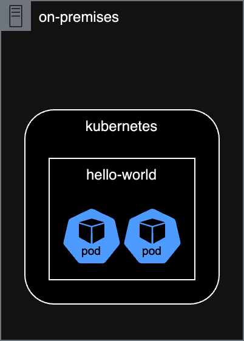
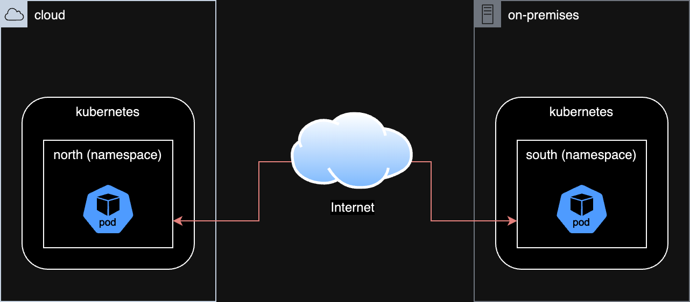

Multicluster Application Interconnect
a hybrid cloud story
This demo is leveraging the skupper example hello world demo to showcase the journey from a development enviroment to a hybrid-cloud deployment. During the walkthrough, the following concepts will be explored:
- how to build a secure container image? or how to include security at the early stage for a frictionless production-grade deployment
- how to deploy applications in a PaaS or even CaaS approach? or how to release in full "gated" autonomy
- how to support split front-end/back-end architecture? or how to leverage the cloud to deploy applications within data sovereignty environment
requirements
This demo has been prepared for Kubernetes in general, and tested on Red Hat OpenShift for a customers and partners event using the followings:
- Red Hat OpenShift Local running on a laptop and defined as the on-prem instance
- Azure Red Hat OpenShift - a Microsoft/Red Hat managed OpenShift cluster
- Skupper - a multi cloud communication framework for Kubernetes
However, since OpenShift is a certified Kubernetes distribution, the overall walkthrough should work on any Kubernetes flavor. To that extend, despite using the oc command, all parameters and arguments have been set to be compatible with kubectl.
Note
Skupper has been selected in this context to provide a granular connectivity between the front-end and back-end across a secure network.
Another solution would be to use Submariner if unifying two cluster at a network level from a scope perspective.
running everything locally

start OpenShift Local
run:
output:
WARN A new version (2.11.0) has been published on https://developers.redhat.com/content-gateway/file/pub/openshift-v4/clients/crc/2.11.0/crc-macos-installer.pkg
INFO Checking if running as non-root
INFO Checking if crc-admin-helper executable is cached
INFO Checking for obsolete admin-helper executable
INFO Checking if running on a supported CPU architecture
INFO Checking minimum RAM requirements
INFO Checking if crc executable symlink exists
INFO Checking if running emulated on a M1 CPU
INFO Checking if vfkit is installed
INFO Checking if old launchd config for tray and/or daemon exists
INFO Checking if crc daemon plist file is present and loaded
INFO Loading bundle: crc_vfkit_4.11.7_amd64...
CRC requires a pull secret to download content from Red Hat.
You can copy it from the Pull Secret section of https://console.redhat.com/openshift/create/local.
? Please enter the pull secret **************************************************************************************************
INFO Creating CRC VM for openshift 4.11.7...
INFO Generating new SSH key pair...
INFO Generating new password for the kubeadmin user
INFO Starting CRC VM for openshift 4.11.7...
INFO CRC instance is running with IP 127.0.0.1
INFO CRC VM is running
INFO Updating authorized keys...
INFO Check internal and public DNS query...
INFO Check DNS query from host...
INFO Verifying validity of the kubelet certificates...
INFO Starting kubelet service
INFO Waiting for kube-apiserver availability... [takes around 2min]
INFO Adding user's pull secret to the cluster...
INFO Updating SSH key to machine config resource...
INFO Waiting for user's pull secret part of instance disk...
INFO Changing the password for the kubeadmin user
INFO Updating cluster ID...
INFO Updating root CA cert to admin-kubeconfig-client-ca configmap...
INFO Starting openshift instance... [waiting for the cluster to stabilize]
INFO 3 operators are progressing: image-registry, openshift-controller-manager, service-ca
INFO 3 operators are progressing: image-registry, openshift-controller-manager, service-ca
INFO 3 operators are progressing: image-registry, openshift-controller-manager, service-ca
INFO 3 operators are progressing: image-registry, openshift-controller-manager, service-ca
INFO 2 operators are progressing: image-registry, openshift-controller-manager
INFO 2 operators are progressing: image-registry, openshift-controller-manager
INFO Operator openshift-controller-manager is progressing
INFO Operator openshift-controller-manager is progressing
INFO Operator openshift-controller-manager is progressing
INFO Operator openshift-controller-manager is progressing
INFO All operators are available. Ensuring stability...
INFO Operators are stable (2/3)...
INFO Operators are stable (3/3)...
INFO Adding crc-admin and crc-developer contexts to kubeconfig...
Started the OpenShift cluster.
The server is accessible via web console at:
https://console-openshift-console.apps-crc.testing
Log in as administrator:
Username: kubeadmin
Password: cKiLy-5umju-GnxbP-Lfqpb
Log in as user:
Username: developer
Password: developer
Use the 'oc' command line interface:
$ eval $(crc oc-env)
$ oc login -u developer https://api.crc.testing:6443
run:
output:
Logged into "https://api.crc.testing:6443" as "kubeadmin" using existing credentials.
You have access to 66 projects, the list has been suppressed. You can list all projects with 'oc projects'
Using project "default".
deploy hello-world
run:
output:
run:
oc create deployment frontend --image ghcr.io/beezy-dev/frontend:2010aba1e1bb5a348fdb498aa75ea97f6e30ee02 -n hello-world
output:
Warning: would violate PodSecurity "restricted:v1.24": allowPrivilegeEscalation != false (container "frontend" must set securityContext.allowPrivilegeEscalation=false), unrestricted capabilities (container "frontend" must set securityContext.capabilities.drop=["ALL"]), runAsNonRoot != true (pod or container "frontend" must set securityContext.runAsNonRoot=true), seccompProfile (pod or container "frontend" must set securityContext.seccompProfile.type to "RuntimeDefault" or "Localhost")
deployment.apps/frontend created
run:
oc create deployment backend --image ghcr.io/beezy-dev/backend:2010aba1e1bb5a348fdb498aa75ea97f6e30ee02 -n hello-world
output:
Warning: would violate PodSecurity "restricted:v1.24": allowPrivilegeEscalation != false (container "backend" must set securityContext.allowPrivilegeEscalation=false), unrestricted capabilities (container "backend" must set securityContext.capabilities.drop=["ALL"]), runAsNonRoot != true (pod or container "backend" must set securityContext.runAsNonRoot=true), seccompProfile (pod or container "backend" must set securityContext.seccompProfile.type to "RuntimeDefault" or "Localhost")
deployment.apps/backend created
Warning
why using these tags?
why is this message appearing?
run:
output:
NAME READY STATUS RESTARTS AGE
backend-79c4d4676f-7s9kv 1/1 Running 0 76s
frontend-c684c5c45-295hd 1/1 Running 0 92s
run:
oc port-forward -n hello-world frontend-c684c5c45-295hd 8080:8080
output:
accessing the application
Opening http://127.0.0.1:8080 in a browser should provide a web page with a button "Say Hello" and responsding with the back-end pod name. If the page is refresh, the autogenerated name will be updated and sent to the backend too.

split deployment
To ease the compliance audit related to our market regulation, our back-end supporting our customer data will be hosted on-prem.
In this scenario, we would consider the followings:
- the OpenShift Local as an on-prem environement called "south"
- the Azure Red Hat OpenShift as our cloud environement called "north"

log in and set contexts
oc login -u kubeadmin https://api.crc.testing:6443
oc config rename-context $(oc config current-context) local
oc create namespace south
oc config set-context local --namespace=south
oc login -u kubeadmin https://api.azhnz6tm.eastus.aroapp.io:6443/
oc config rename-context $(oc config current-context) aro
oc create namespace north
oc config set-context aro --namespace=north
enable skupper
oc config use-context aro
skupper init
skupper status
oc config use-context local
skupper init
skupper status
output:
Skupper is enabled for namespace "default" in interior mode. It is not connected to any other sites. It has no exposed services.
The site console url is: https://skupper-default.apps.azhnz6tm.eastus.aroapp.io
The credentials for internal console-auth mode are held in secret: 'skupper-console-users'
Skupper is enabled for namespace "default" in interior mode. Status pending... It has no exposed services.
The site console url is: https://skupper-default.apps-crc.testing
The credentials for internal console-auth mode are held in secret: 'skupper-console-users'
link namespace
output:
oc config use-context local
skupper link create ~/secret.token
skupper link status
output:
Site configured to link to https://claims-default.apps.azhnz6tm.eastus.aroapp.io:443/d57e084e-7654-11ed-9e43-acde48001122 (name=link1)
Check the status of the link using 'skupper link status'.
Links created from this site:
-------------------------------
Link link1 is active
Currently active links from other sites:
----------------------------------------
There are no active links
deploy front-end
run:
oc config use-context aro
oc create deployment frontend --image ghcr.io/beezy-dev/frontend:2010aba1e1bb5a348fdb498aa75ea97f6e30ee02 -n north
deploy back-end
run:
oc config use-context local
oc create deployment backend --image ghcr.io/beezy-dev/backend:2010aba1e1bb5a348fdb498aa75ea97f6e30ee02 -n south
expose backend service
run:
output:
expose frontend service
run:
oc config use-context aro
oc expose deployment/frontend --port 8080 --type LoadBalancer
oc get service/frontend
output:
NAME TYPE CLUSTER-IP EXTERNAL-IP PORT(S) AGE
frontend LoadBalancer 172.30.155.146 40.88.201.78 8080:30547/TCP 21s
Check in a browser:

run:
output:
NAME READY STATUS RESTARTS AGE
backend-79c4d4676f-dw99z 1/1 Running 0 71s
skupper-router-58578d87f8-tbl7m 2/2 Running 0 3m54s
skupper-service-controller-5b8f545d4c-782fx 1/1 Running 0 3m52s
what happen in case of the backend failure
run:
output:
NAME READY STATUS RESTARTS AGE
backend-79c4d4676f-zrfzc 1/1 Running 0 3s
skupper-router-58578d87f8-tbl7m 2/2 Running 0 5m16s
skupper-service-controller-5b8f545d4c-782fx 1/1 Running 0 5m14s